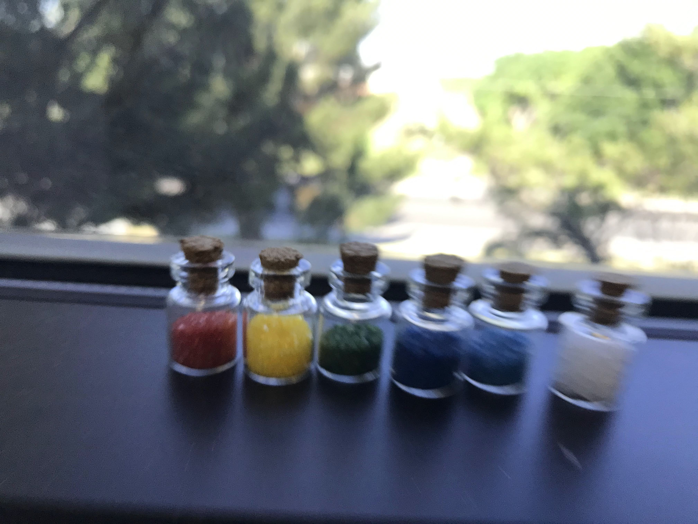
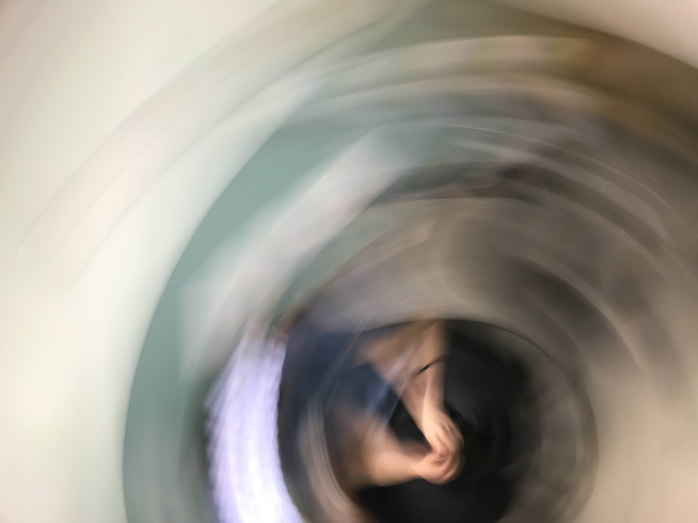
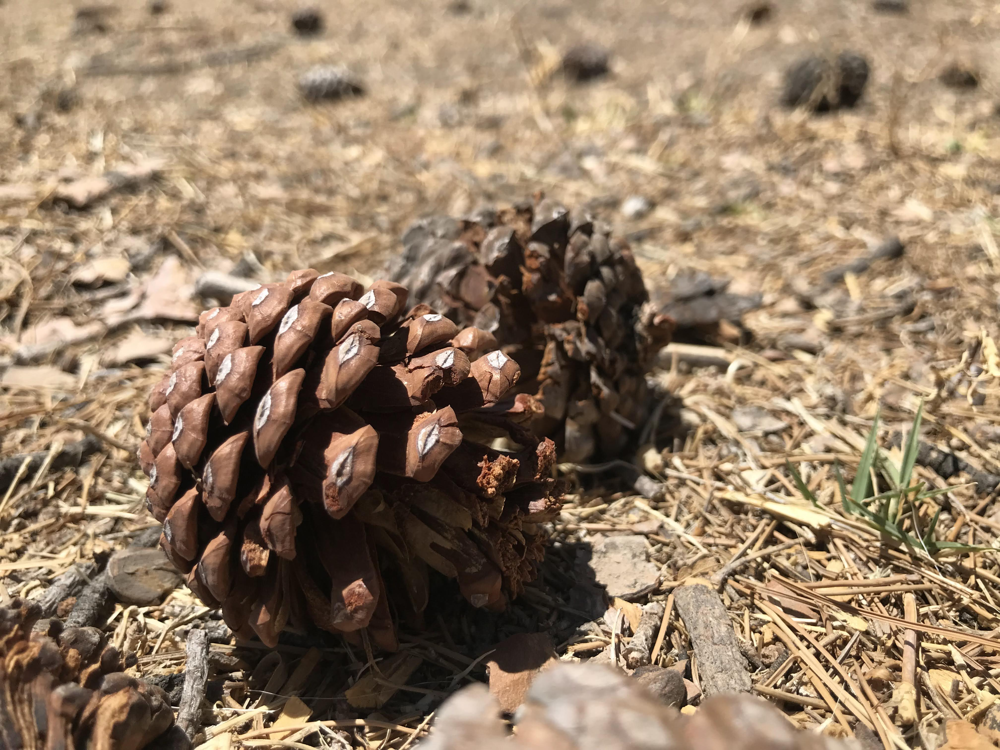
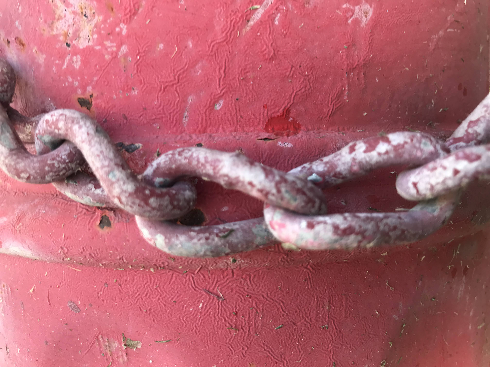
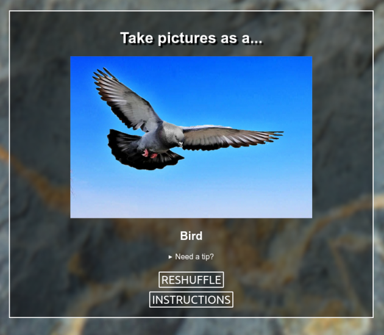

It's been a bit of an odd for month for me since I last wrote in here, I've been struggling with this ongoing fatigue that has really kept me from maintaining any motivation to work on hobby prokects like this one. Playing games or reading books during my own leisure time had even proven to be a bit of a struggle. This week, however, I've been docusing on trying to get more sun and deliberately take more leisure time, and I feel as though I'm on a bit of an upswing. I'm trying to take advantage of this and get back into playing with this Perspectives game idea and documenting the process as I go along.
In my last post I introduced the idea for this Perspectives Game and some of the prototyping I had done so far with the ideas I had come up with. Since then, I have been having some good conversations with a few folks in Paradise about some directions this could go as well as explore ideas for additional prompts.
After some discussion I took some suggestions from Paulby and 🌱🍀🌲, I added two new perspectives to the mix:
- Excitable Dog
- Tourist
My hope is that as you, the reader, saw these two new perspectives, and that you might have asked yourself "What does taking pictures as an excitable dog look like?" Maybe you went so far as to imagine yourself as a tourist with a camera, taking a selfie or posing with points of interest around you, or perhaps you had a different idea of how to shoot as a tourist overall. While brainstorming some potential perspectives and their guidelines, we naturally began to suggest our own interpretations for what the guidelines ought to be for each creature. For example, taking a pictures like an "excitable dog" could be pictures takin in rapid and fast motion, as if you were a dog rushing up to greet a person:
 Or, perhaps a dog with a camera would rather get up close to things of interest, getting within "sniffing distance" to learn more about them:
 This brings me to a pretty important point in the discussions I've been having on discord: keeping these perspectives open to interpretation, rather than setting hard "rules" or "guidelines" that players must follow during their play sessions. Perhaps being heavily influenced by recent readings into play and creativity, taking the opporunity to "deputize players" into making the game their own is too enticing for me to not encourage. Alistair Aitcheson, in his podcast episode on Clowns and Humility, talks about the importance of "letting the audience hav[ing] better ideas than you", and the importance of being a facilitator for an audience to play along with your performance. If the entire goal of this game is to treat the art of photography with a bit more playfulness, why not let this game as more as a facilitator for ther creation of new rules, as determined by the players themselves? After all, the rules aren't meant to be the highlight of this game, but the new and awkward techniques you explore with your camera, and the images you might capture as a result.
This led to a few adjustments to how I thought I could layout the page of the web version - rather than writing out the perspective guidelines front and center, I could hide them away within a clickable element, hopefully prompting the player to try and figure out how to simulate the prompted perspective, and only revealing our written guidelines if they don't have any ideas.
At this point, it seemed necessary to start moving this out of the prototype stage and into something a bit more polished. Taking some of the feedback I had received in previous discussions, I have since started re-arranging the positions and style of elements on the page. However, at some point during this process, I was reminded that I had an original goal that I had completely forgotten about - printable cards.